Ny hemsida — 18 designförslag
Samma innehåll (presentation, meriter, appar med jordglob, kurs, kontakt) — arton olika karaktärer. Tryck på ett kort för att öppna förslaget.
Tips: varje förslag öppnar med en terminal-laddskärm (tryck var som helst för att hoppa över — den visas bara en gång per flik). Alla sidor funkar i mobilen.
★ UTVECKLAS NU · ERT VAL
Tystnaden, version 2 — med er feedback: cirkel-laddskärm, gula knappar, ny struktur.
OMGÅNG 1 · TRE KARAKTÄRER
De första tre riktningarna: mörk terminal, elegant natt, ljus lekfullhet.
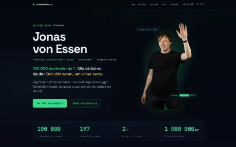
Superminne OS
Mörk terminal — meriterna som git-logg, boot-sekvens, fosforgrönt.
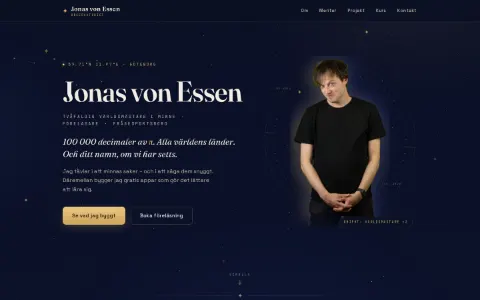
Observatoriet
Elegant natt — stjärnfält, guld, serif och meriterna som stjärnbild.
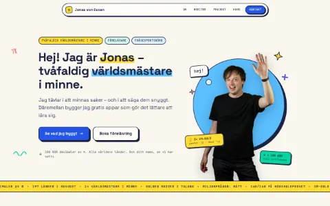
Snille & sprall
Ljust och färgstarkt — sticker-meriter och poserna i huvudrollen.
OMGÅNG 2 · TIO KONCEPT
Bredare spann: från arkitektritning och tidning till cirkusaffisch och brutalism.
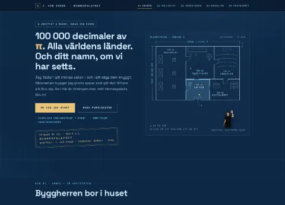
Minnespalatset
Cyanotypi-ritning — klickbar planritning som tänds rum för rum.
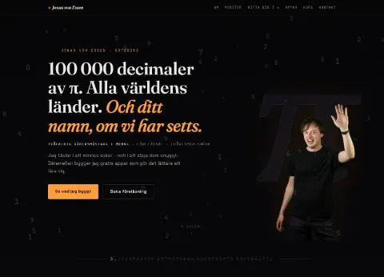
π-katedralen
Cinematiskt sifferregn — hitta ditt födelsedatum i 100 000 decimaler.
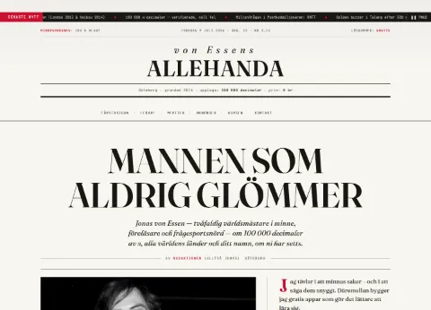
Förstasidan
Tidningen von Essens Allehanda — notiser, annonser och korsord.
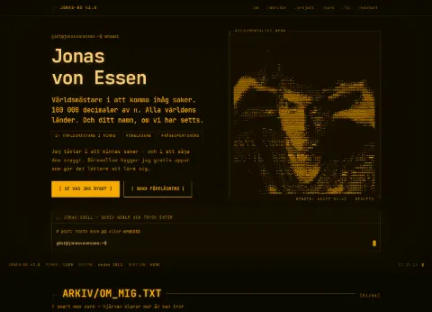
CRT-arkivet
Amber-terminal — ASCII-porträtt i realtid, skrivbar kommandorad.
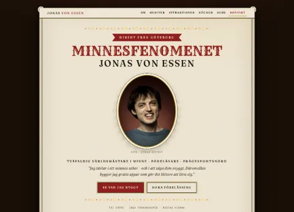
Varietéaffischen
Vintage sensationsposter — marquee-lampor och riv-en-biljett.
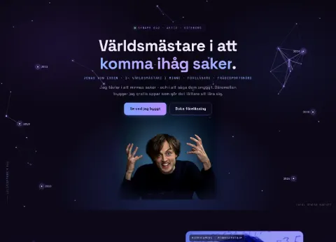
Synapsen
Elektrisk hjärna — interaktivt neuronnät där meriterna är noder.
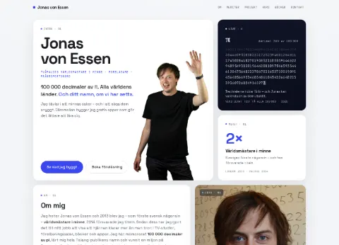
Bento-studion
Premium bento-grid — 3D-tilt och en levande π-bricka.
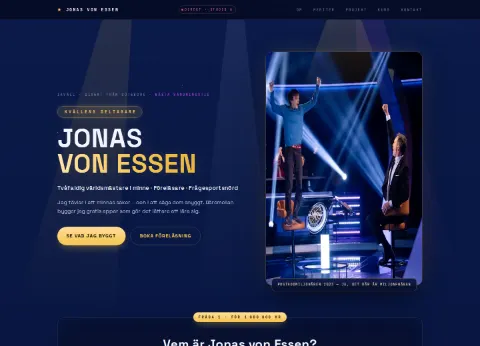
Gameshow
TV-studio — jackpot-odometer och A/B/C/D-fråga med konfetti.
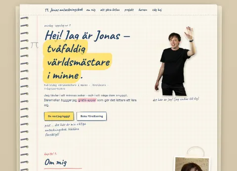
Skissboken
Anteckningsboken — handskrivna marginalkommentarer och doodles.
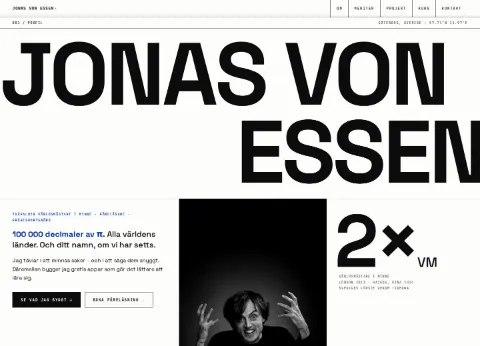
Monoliten
Brutalist Swiss — gigantisk typografi och IKB-blå accent.
OMGÅNG 3 · FEM MODERNA
2026-känsla: glas, scrollberättelse, ljuskägla, mjuk 3D och lime.
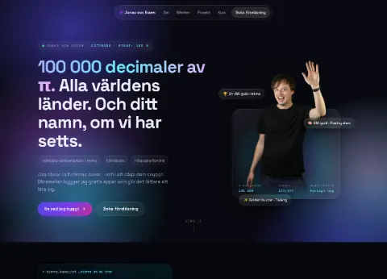
Aurora
Glassmorphism — levande mesh-gradienter och glaskort med ljusreflex.
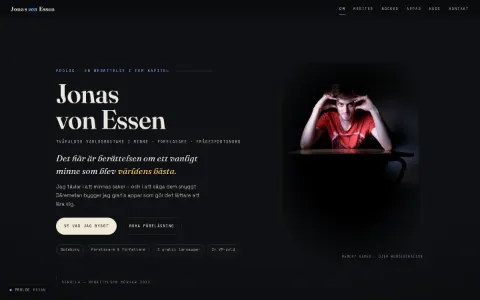
Resan
Scrollytelling — karriären som filmkapitel med pinnad VM-scen.
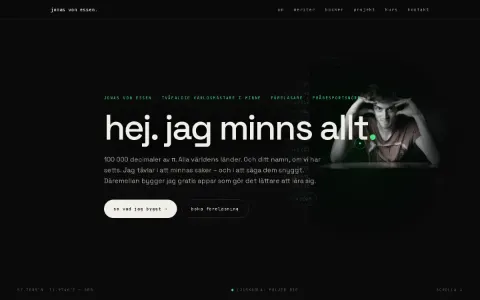
Strålkastaren
Mörk lyx — ljuskägla som avslöjar gömda π-decimaler i mörkret.
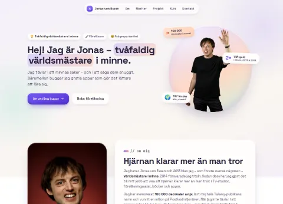
Mjukstudion
Soft 3D/clay — squishande kuddar och en hemlig klämräknare.
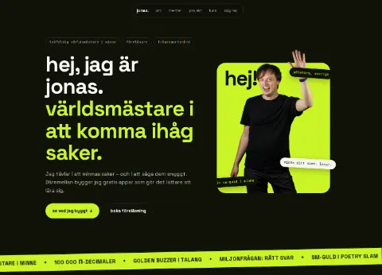
Limelight
Off-svart + lime — meriterna som kortlek som staplas när man scrollar.
OMGÅNG 4 · POETISKT & OVÄNTAT
Två poetiskt minimalistiska, en handskriven, en Willy Wonka — och en "vad är det här?!".
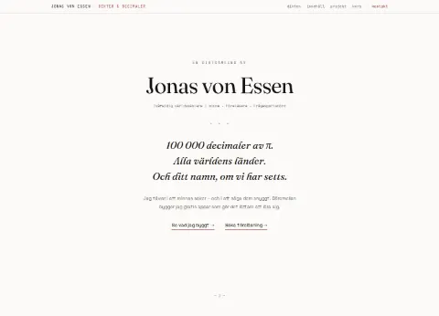
Diktsamlingen
Ljus poetisk minimalism — hela sidan är en dikt, med fakta i marginalfotnoter.
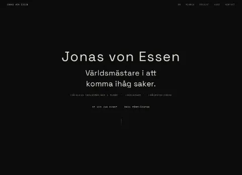
Tystnaden
Mörk meditation — en tanke i taget, bara raden du läser är tänd.
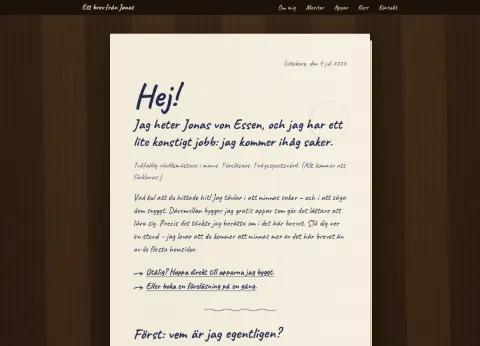
Brevet
Helt handskrivet brev som skriver sig självt — öppnas ur ett kuvert med sigill.
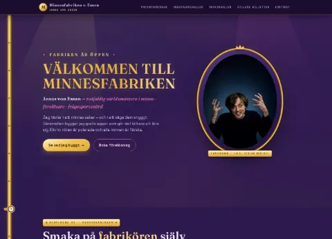
Minnesfabriken
Willy Wonka — sammetsridå, meriter under glaskupor och en gyllene biljett.
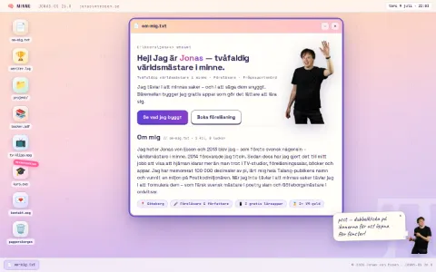
JonasOS 26.0
"Vad är det här?!" — hemsidan är ett operativsystem med dragbara fönster.